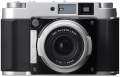

器材库 > 120中幅相机 > GF670W Professional

规格总览
发布日期
2010-09-14
标称画幅
6×7cm, 6×6cm
实际画幅
56×69mm, 56×56mm
sc2012013-01-12 00:314.33 分
操作性 4.50功能性 4.50美观性 5.00趣味性 4.00耐用性 4.00性价比 4.00
mxwpig2012-02-23 10:584.67 分
操作性 5.00功能性 4.50美观性 5.00趣味性 4.50耐用性 5.00性价比 4.00
mooooom2012-01-07 14:274.75 分
操作性 5.00功能性 4.50美观性 5.00趣味性 4.50耐用性 4.50性价比 5.00
产品图 / 样片
GF670W Professional
评测 / 相关文章
- 详细内容 （存档）
- ［资讯］富士中画幅广角银盐相机即将开售 （存档）
- ［资讯］富士可折叠中画幅相机GF670发售 （存档）
- ［资讯］姗姗来迟，富士GF670本月上市 （存档）
- ［资讯］富士GF670相机3月限量发售 （存档）
相关文章
- ［资讯］富士中画幅广角银盐相机即将开售 （存档）
- ［资讯］富士可折叠中画幅相机GF670发售 （存档）
- ［资讯］富士发布中画幅旁轴相机GF670W （存档）
- ［资讯］姗姗来迟，富士GF670本月上市 （存档）
- ［资讯］富士GF670相机3月限量发售 （存档）